Easy Text Animation

このアドオンはジオメトリノードを使用して簡単にテキストアニメーションを作成できます。
移動/拡縮/回転の値を各文字ごとにアニメーションさせることができます。 一つ目と二つ目のアニメーションにそれぞれ移動/拡縮/回転を設定できます。
また、テキストアニメーションとは別にタイマーを作成することも可能です。
バージョン2.6以降は、Blender3.5以上にのみ対応です。
使用方法
※BlenderのUI言語を日本語にすると、当アドオンの言語も日本語になります。
Easy Text
作成
- 3Dビューポート → Nパネル → EZTxtAnimタブを選択
- 入力欄に文字を入力して”Easy Textを作成”をクリック
- 改行したい場合は、改行したい場所に\nを入力
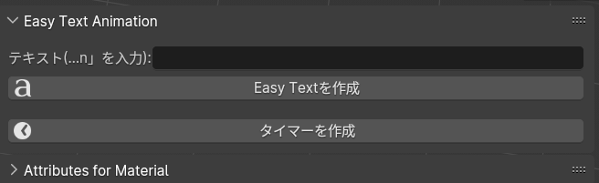
編集
上記の方法で作成されたオブジェクトを選択すると、パネルが編集用に変わります
“Text”パネルではテキストの編集ができます
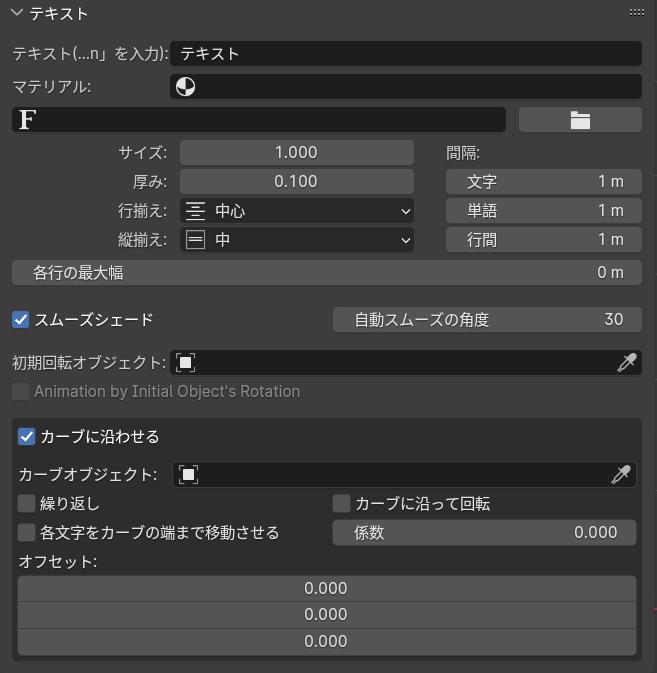
- テキスト、マテリアル、フォント、サイズ、厚み、間隔、行揃え、縦揃えを編集できます
-
各行の最大幅は、テキストが複数の単語で構成されている場合の、改行までの長さです。
0は改行しません。(テキストに\nを入力した場合を除く) - スムーズシェードは、標準の”自動スムーズを使用”と同じです
-
"初期回転オブジェクト"には、テキストの各文字のアニメーションする前の回転を設定させるためのオブジェクトを指定します。
このオブジェクトの回転の値が、各文字に反映されます。 - "Animation by Initial Object's Rotation"をオンにすると、回転後のローカル座標に応じてアニメーションします。オフにすると、ワールド座標に応じてアニメーションします。
- "カーブに沿わせる"では、指定したカーブに沿ってテキストが配置されます。
“1st Animation”パネルではキーフレーム無しで一つ目のアニメーションを作成できます
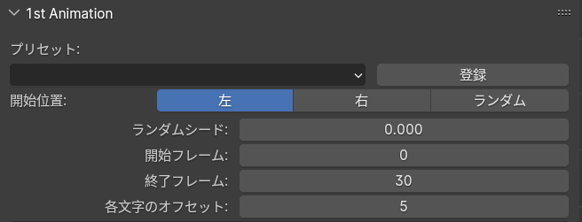
- テキスト、マテリアル、フォント、サイズ、厚み、間隔、行揃え、縦揃えを編集できます
- 組み込みのプリセットまたは自身で作成したプリセットを選択できます
上記に加えて、このパネルには”移動”、”スケール”、”回転”セクションがあります
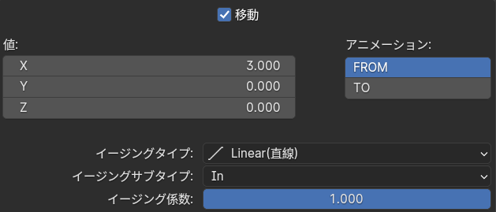
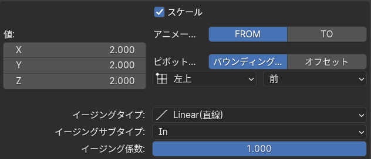
- それぞれのセクションでアニメーション値(Value)、アニメーション値からもしくは、アニメーション値へのアニメートの切り替え(Animate FROM/TO)、イージングタイプ(Easing (Sub) Type)、イージング量(Easing Factor)を編集できます
- “Scale” / ”Rotation”セクションでは、拡縮 / 回転の原点をバウンディングボックスまたはオフセットに設定できます
バウンディングボックスはそれぞれの文字の境界を基準に、原点を設定します
- XZ方向に対して: Top Left(左上)、Top(上)、Top Right(右上)、Middle(中央)、Bottom Left(左下)、Bottom(下)、Borrom Right(右下)
- Y方向に対して: Front(前)、Middle(中央)、Back(後ろ)
オフセットはそれぞれの文字の中央から、設定した値の分移動したところに原点を設定します
- XZ方向に対して: Top Left(左上)、Top(上)、Top Right(右上)、Middle(中央)、Bottom Left(左下)、Bottom(下)、Borrom Right(右下)
- Y方向に対して: Front(前)、Middle(中央)、Back(後ろ)
“2nd Animation”パネルでは”1st Animation”終了後のアニメーションを設定できます
設定項目は同じです
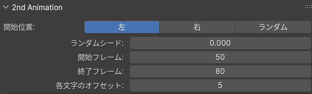
“2nd Animation”の”移動”、”スケール”、”回転”セクションもほぼ”1st Animation”と同じですが、値へのアニメーション方法(アニメーション FROM/TO)に違いがあります
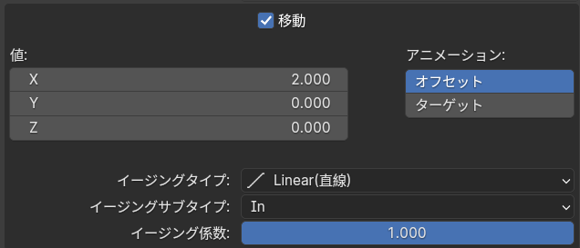

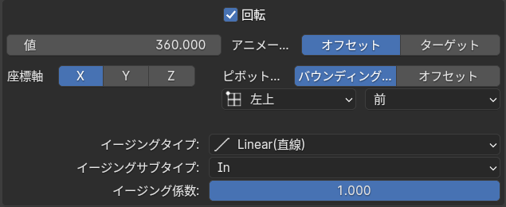
- オフセットでは”1st Animation”が終わった後の状態から、どれだけ移動/拡縮/回転するかをValueで設定します
- ターゲットでは”1st Animation”に関係なく、値に向かって移動/拡縮/回転します
"カスタム"イージングタイプを好みに編集できます
- このアドオンで作られたオブジェクトを選択し、ジオメトリノードエディターを開きます
- 赤い枠で囲まれた"sum_EasingTypeSwitcher_2.5.1v"という名前のノードグループを選択し、Tabキーでグループの中へ入ります
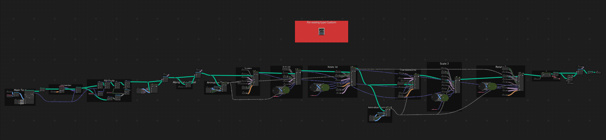
- “Custom”フレーム内の“Floatカーブ”ノードを好みのイージングになるように編集します
- "移動","スケール","回転"セクションのイージングタイプがカスタムになっていれば、編集されたイージングが機能します
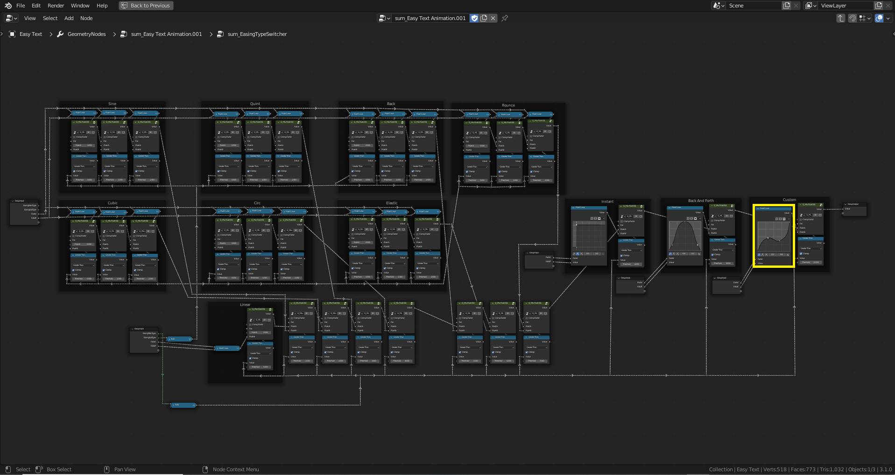
プリセット


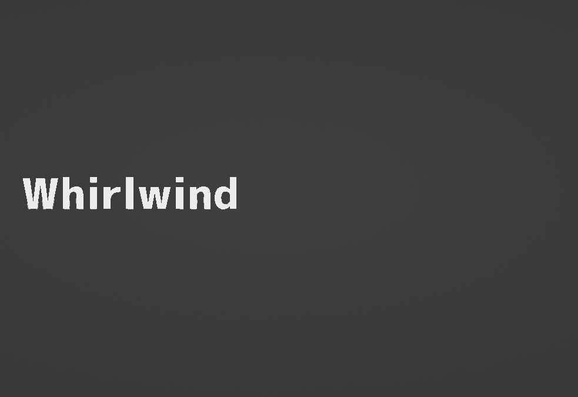


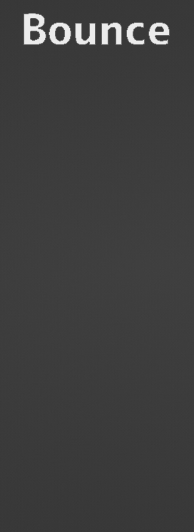

マテリアル
本アドオンで作成されたオブジェクトに対してマテリアルを設定する場合は、テキストパネルのマテリアルから設定してください
プロパティのマテリアルタブから設定しても反映されません
マテリアルで使用するための属性が、いくつか用意されています。
右のボタンからクリップボードにコピーできます。
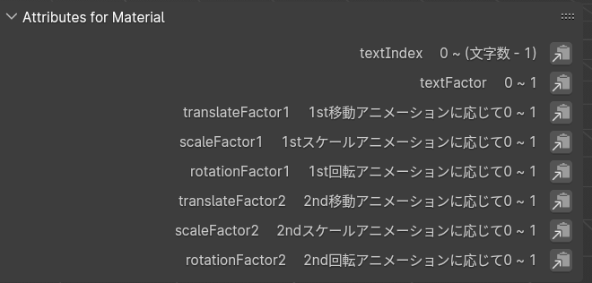
シェーダーエディター内で、属性ノードの名前に入力して使用する事ができます
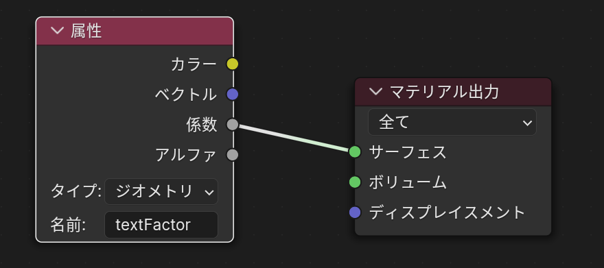
タイマー
作成
- 3Dビューポート → Nパネル → EZTxtAnimタブを選択
- ”タイマーを作成”をクリック
編集
上記の方法で作成されたオブジェクトを選択すると、パネルが編集用に変わります
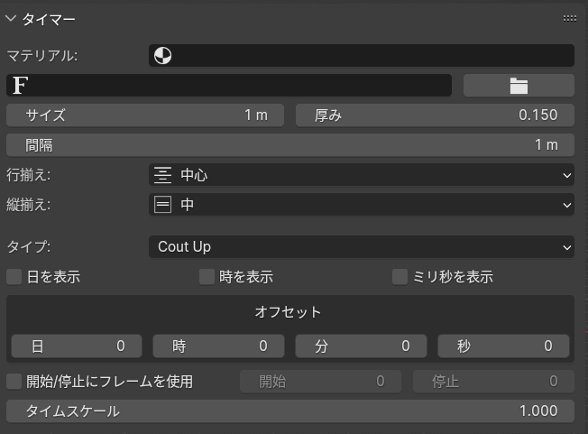
- マテリアル、フォント、サイズ、厚み、行揃え、縦揃えをEasy Textと同様に変更できます
- 間隔は文字間にのみ作用します
- タイプ：カウントアップ/カウントダウンを選べます
- 日/時/分/ミリ秒の、表示/非表示を変更できます。時間を表示せずに日を表示しないように制限されます
- オフセット：日/時/分/秒に対してオフセットされた値から、タイマーがスタートします
- 開始/停止にフレームを使用：有効にすると、タイマーは開始に設定したフレームに開始し、停止に設定したフレームで停止します
- タイムスケール：タイマーの時間の進み方。1だと通常通り、0.5だと半分の速度で、2だと倍速で進みます
注意事項
- “1st Animation”で”Animate”を”FROM”に設定した場合、”2nd Animation”で”Animate”を “Offset”または”Target”に設定しても違いはありません。
- 新しくシーンを作成したい場合には”New”オプションを使用しないでください
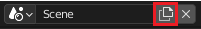

アップデート履歴
|
2.6.1
|
バグフィックス |
|
2.6.0
|
マテリアルで使用できる属性を追加 初期回転オブジェクトのバグを修正 EasyText作成時に、上を向くようになりました |
|
2.4
|
Blender3.5.に対応 "Max Width"パラメータを追加 |
|
2.3
|
モーションブラー使用時のバグを修正 シェーディングの問題を修正 |
|
2.2
|
Shade Smooth機能を追加 |